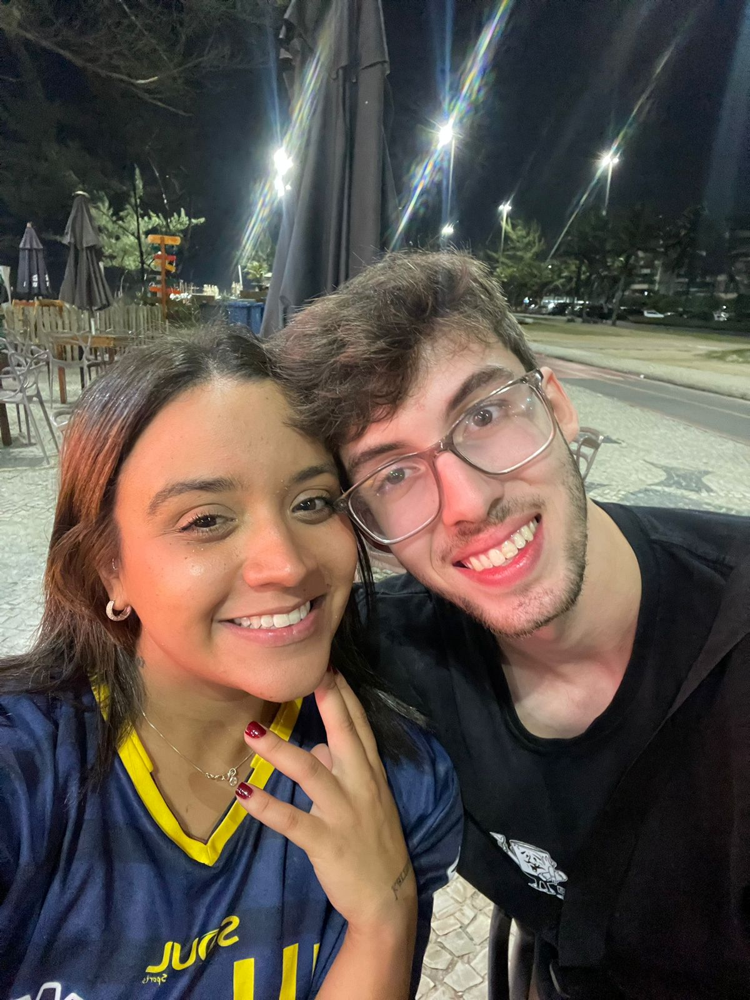

Você realmente não faz ideia do que eu sinto por você e sei que não sou a melhor pessoa para conseguir expressar meus sentimentos mas deixa eu tentar um pouco aqui.
Eu sei que eu não sou a pessoa mais sociável do mundo, que as vezes pode parecer que eu estou de saco cheio de estar em algum lugar (e às vezes é verdade), posso ser uma pessoa difícil de lidar e ter problemas para confiar nas pessoas, tenho diversas questões com a autoestima, principalmente com a questão da fala e, posso tentar não levar as coisas a sério para fingir que está tudo bem e tudo mais. Por essas e outras eu achei por algum tempo que seria difícil ser amado e, como sou chato pra gostar das pessoas, mais difícil ser amado por alguém que eu amo de verdade.
E foi aí que você, saindo de São Paulo, pegando um ônibus de 6 horas para passar o fim de semana no Rio para comemorar o seu aniversário, deixando claro que se não fosse por mim você não viria, apareceu na minha vida me fazendo sorrir só por estar lá comigo. Mesmo nós tendo planejado ver o pôr do sol na praia e as coisas não funcionarem da forma esperada, você quebrando um copo de caipirinha no Salinas eu acho que eu não podia ter saído de lá mais feliz depois de ter te conhecido, ainda mais com você fazendo questão de ir embora vestindo uma camisa com o meu nome.
Porque não foi pelo date, foi pela pessoa que eu conheci, que fazia questão da minha companhia o tempo todo e deixou isso bem claro, tirava risadas genuínas de mim e, mais do que tudo, me fazia me sentir querido sem esforço, não só naquele momento mas em todas as oportunidades que ela teve até chegarmos nesse momento onde estamos aqui nessa cama de airbnb em São Paulo só para passar o fim de semana com ela, a doidinha que viajou 6 horas pra passar 3 horas comigo num restaurante praticamente vazio e deitar na areia de calça jeans.
E é isso o que eu sinto por você, meu amor. A pessoa mais carinhosa que já conheci, divertida, engraçada, sem medo de ser você mesmo, amorosa, muito amorosa, que me fez conhecer o sentimento de amar alguém, porque eu realmente nunca tinha sentido nada igual por outra pessoa, e eu amo esse sentimento. Eu amo você e amo te amar. Cada segundo com você parece mágico, perfeito e suave, cada minuto com você parece que o mundo não importa, que todos os meus problemas somem quando o meu olhar cruza com o seu. Cada hora com você passa mais rápido que os segundos mas viram uma eternidade de memórias e lembranças boas que passam em loop na minha cabeça 24 horas por dia quando estamos longe um do outro assim como essa música que está tocando atrapalhando a sua leitura. Você encontrou o garoto quebrado e desesperançoso que existia dentro desse jovem adulto de praticamente 2 metros de altura, juntou caco por caco, e abraçou ele, cuidou dele, deu amor e carinho que ele achou que não merecia por muito tempo e fez ele perceber como a vida é linda e como é maravilhoso viver ao seu lado. Obrigado por tudo.
Já faz quase 1 ano daquele 26/10/2024 e você continua aqui e eu não pretendo deixar você ir embora da minha vida. Sei que já vivemos muitas coisas juntos, desde um almoço especial no Don Pascual que se tornou um hit no tiktok,
uma voltinha pela Liberdade, alguns cineminhas, umas idas à praia
até um show do cover do queen e uma voltinha putífera em Araras.
Sei também que você queria um anel ou um gesto mais clássico tipo sair para algum lugar legal para que houvesse um pedido mais memorável e eu até pensei em uma ideia legal para fazer isso só que seria no Rio de Janeiro e vai demorar um pouco mais para você ir pra lá e eu não queria esperar tudo para poder dizer realmente que você é a minha namorada porque o tanto que te amo não cabe nesse texto ou em qualquer limitação gramatical. Mas eu espero que tenha gostado dessa gracinha que eu fiz aqui que é meio nerd mas você sempre gosta quando a gente resolve questões de concurso, falo sobre proparoxítonas, orações subordinadas, vocativos e tudo mais então acho que deve ter gostado né. Mas vou parar de enrolação, então clica no botão que eu quero te fazer uma pergunta.